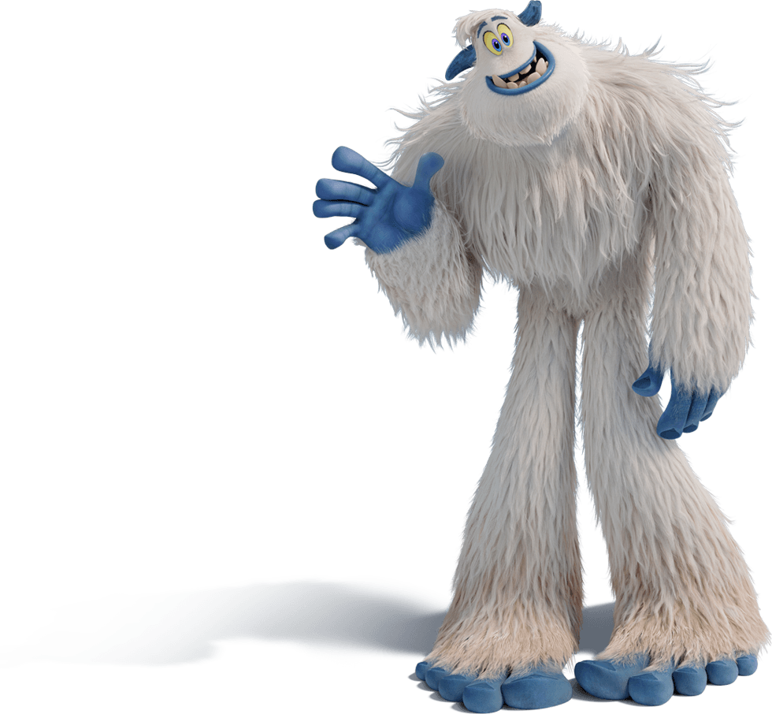
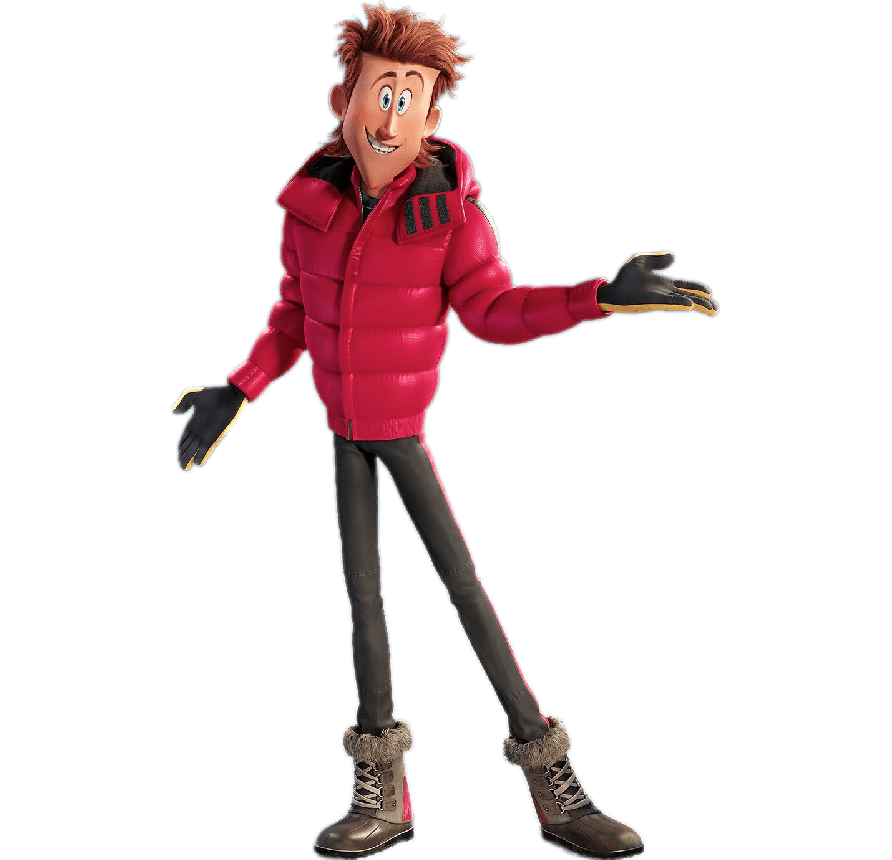
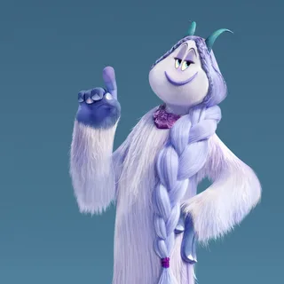

Компании и их мультфильмы
- 20th Century Fox Animation
- DreamWorks Animation
- Pixar
- Sony Pictures Animation
- Marvel Animation
- Walt Disney Animation Studios
-
Рио 2 (2014)
Ледниковый период 3: Эра динозавров (2009)
Семейка Крудс (2013)
Пингвины Мадагаскара (2014)
Турбо (2013)
Приключения мистера Пибоди и Шермана (2014)
Фердинанд (2017)
-
Шрек Третий (2007)
Кот в Сапогах 2: Последнее желание (2023)
Подводная братва (2004)
Би Муви: Медовый Заговор (2007)
Шрек (2001)
Как приручить дракона (2010)
-
История игрушек
Приключения Флика
Корпорация монстров
В поисках Немо
Суперсемейка
-
Человек-Паук: Через Вселенные (2018)
Митчеллы против Машин (2021)
Облачно, возможны осадки в виде фрикаделек (2009)
Лови волну (2007)
Angry Birds в кино 2 (2019)
-
"Человек-паук" (1994-1998)
"Люди в чёрном" (1997-2001)
"Железный человек: Приключения в броне!" (2009-2012)
"Мстители: Величайшие герои Земли" (2010-2013)
"Мстители, общий сбор!" (2013-2019)
-
Оливер и компания (1988)
Черный котел (1981)
Привет, друзья (1942)
Три кабальеро (1944)
В гости к Робинсонам (2007)s
Smallfoot


